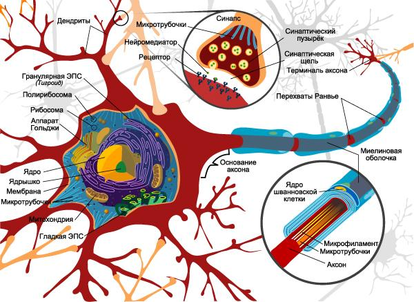
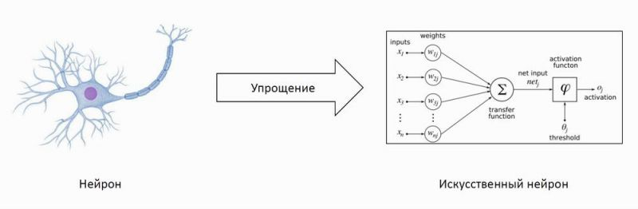
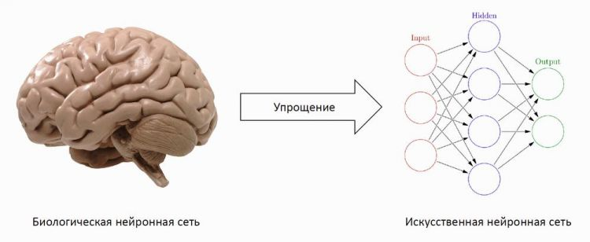
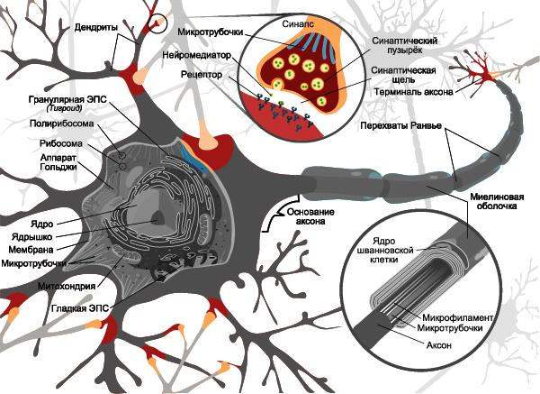
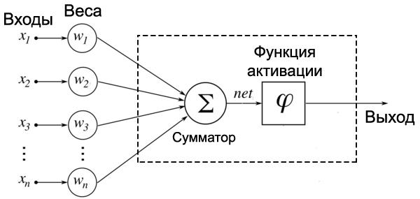
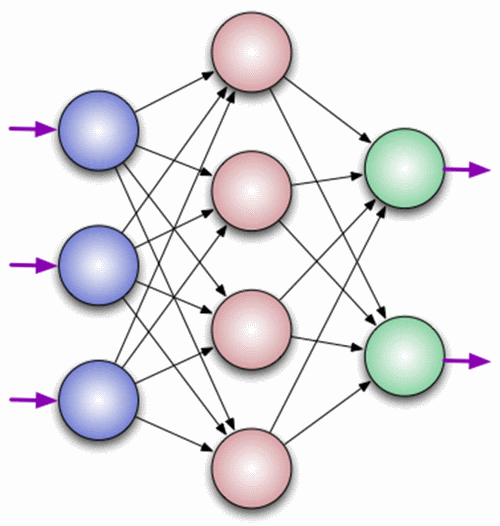
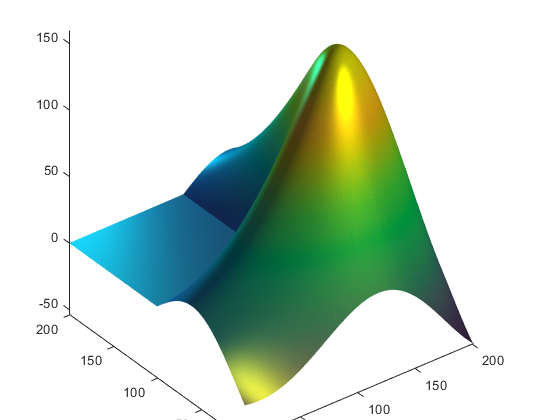

Идея нейронных сетей была позаимствована у природы, а точнее в качестве аналога использовалась нервная система животных и человека. Нервная система состоит из огромного количества достаточно простых элементов – нейронов. Каждый нейрон получает сигналы от тысяч других нейронов и передает обработанную информацию тысячам других нейронов по одному единственному выводу. Нейроны связаны между собой в достаточно сложную и идеально настроенную систему. Высокое быстродействие данной системы, пока не достижимое для современных компьютеров, обеспечивается за счет параллельности обработки информации.
Привлекательным для меня в ходе изучения типов нейронных сетей является то, что современные нейрокомпьютеры позволяют с высокой эффективностью решать целый ряд интеллектуальных задач. Это задачи распознавания текстов, принятия решений в сфере управления, прогнозирование, диагностика и т.д.
Цель исследования – изучение существующих типов нейронных сетей и возможности их применения.
Для достижения цели нам необходимо решить следующие задачи:
изучить материал по данной теме;
разобраться с понятием «Нейронная сеть»;
узнать что такое нейрон;
узнать принцип работы нейронной сети;
сравнить типы;
рассмотреть особенности и применение.
изучить применение нейронных сетей в оценке и прогнозировании цен на жилую недвижимость.
Нейронная сеть
Что же такое НС (нейронная сеть)? Вспомним уроки биологии - каждое существо в нашем мире имеет нервную систему, а более продвинутые жители Земли еще и мозг. Так вот, из биологических нейронных сетей состоит наш мозг. Органы чувств передают информацию о раздражителе нейронным сетям, а те в свою очередь обрабатывают ее, благодаря чему мы чувствуем тепло и холод, ветер, влагу, можем распознать людей, вещи, запомнить информацию и так до бесконечности. Вот так выглядит нейрон - очень сложная биологическая система (рисунок 1).

Искусственный нейрон - это тот же биологический нейрон, но только сильно упрощенный. Ему ведь не нужны оболочки, мембраны, ядра, рибосомы и прочее, чтобы математический нейрон смог жить. Ему необходим лишь алгоритм работы биологического нейрона, чтобы осуществлять задуманное - самообучение компьютеров и их систем. Как выглядит упрощённый биологический нейрон в математическом виде показано на рисунке 2.

Как выглядит мозг, упрощенный до НС показано на рисунке 3.

В процессе изучения материала по данной теме я понял, что нейронная сеть должна выполнять функции головного мозга т.е. уметь думать.
Принцип работы нейронной сети
Принцип работы НС в точности повторяет алгоритм работы биологических нейронов. Чаще всего ответ на вопрос, почему нейросети работают, звучит так: каждый нейрон из сети умеет обрабатывать сигнал, а поскольку их миллиарды, то входящая информация на входе преобразуется в правильный сигнал на выходе. Важно учитывать то, что алгоритм работы каждого нейрона одинаков, поэтому возникает вопрос: если все нейроны работают по одинаковому примеру, то почему нейросети могут выдавать разные ответы, а не один и тот же постоянно? Дело в том, что помимо самих нейронов существуют еще и синапсы. Синапс - это место соединения выхода одного нейрона и входа другого, при этом сигнал при прохождении через синапс либо усиливается, либо ослабляется. На картинке можно увидеть, как соединяются биологические нейроны друг с другом - красный цвет отображает главный нейрон, а желтый выходы близлежащих нейронов. Каждый из биологических нейронов обладает тысячами входов для других нейронов, а значит и синапсов также тысячи. Умножим тысячи на миллиарды нейронов (у человека около 85 млрд. нейронов в головном мозге) и получаем очень большое число синапсов (рисунок 4).

Каждый синапс индивидуален, он либо усиливает, либо ослабляет сигнал нейрона, проходящий через него. В течение жизни синапсы меняются, а значит, и изменяются проходящие через них сигналы. Именно совместная работа нейрона и синапса преобразуют входящие сигналы в верные решения на выходе.
С точки зрения кибернетики синапс это связь между двумя нейронами. У синапсов есть 1 параметр — вес. Благодаря ему, входная информация изменяется, когда передается от одного нейрона к другому. Допустим, есть 3 нейрона, которые передают информацию следующему. Тогда у нас есть 3 веса, соответствующие каждому из этих нейронов. У того нейрона, у которого вес будет больше, та информация и будет доминирующей в следующем нейроне (пример — смешение цветов). На самом деле, совокупность весов нейронной сети или матрица весов — это своеобразный мозг всей системы. Именно благодаря этим весам, входная информация обрабатывается и превращается в результат.
Как выглядит математический вид нейрона показано на рисунке 5. Нейрон состоит из входов, на которые подаются числа, весов (те же синапсы) и сумматора. Поступающие на входы числа умножаются на соответствующие веса, после чего произведения суммируются. Сумма всех результатов не является окончательным решением и для выдачи готового результата используется функция активации. Функция активации вычисляет выходной сигнал сумматора в правильное решение. Всего существует три вида функции возбуждения:
пороговая функция;
гистерезис;
сигмоид.

Из вышесказанного видно, что принцип работы нейронной сети заключается во взаимодействии нейронов между собой посредством синапсов.
Что такое нейрон?
Нейрон — это вычислительная единица, которая получает информацию, производит над ней простые вычисления и передает ее дальше. Они делятся на три основных типа: входной (на рисунке 6 обозначен синим цветом), скрытый (на рисунке 6 обозначен красным цветом) и выходной (на рисунке 6 обозначен зеленым цветом).
В том случае, когда нейросеть состоит из большого количества нейронов, вводят термин слоя. Соответственно, есть входной слой, который получает информацию, n скрытых слоев, которые ее обрабатывают и выходной слой, который выводит результат. У каждого из нейронов есть 2 основных параметра: входные данные и выходные данные.

Таким образом, искусственный нейрон представляет собой алгоритм, который помогает принять информацию, обработать ее и использовать дальше по назначению.
Типы нейронных сетей
Определившись в общих чертах, что собой представляет нейронная сеть, можно выделить основные типы их классификации. Прежде чем приступить к классификации необходимо ввести одно уточнение. Каждая сеть имеет первый слой нейронов, который называется входным. Он не выполняет никаких вычислений и преобразований, его задача состоит только в одном: принять и распределить по остальным нейронам входные сигналы. Это единственный слой, который является общим для всех типов нейронных сетей, дальнейшая их структура и является критерием для основного деления.
Однослойная нейронная сеть. Это структура взаимодействия нейронов, при которой после попадания входных данных в первый входной слой сразу передаётся в слой выхода конечного результата. При этом первый входной слой не считается, так как он не выполняет никаких действий, кроме приёма и распределения, об этом уже было сказано выше. А второй слой производит все нужные вычисления и обработки и сразу выдаёт конечный результат. Входные нейроны объединены с основным слоем синапсами, имеющими различный весовой коэффициент, обеспечивающий качество связей.
Многослойная нейронная сеть. Как понятно из определения, этот вид нейронных сетей помимо входного и выходного слоёв имеет ещё и промежуточные слои. Их количество зависит от степени сложности самой сети. Она в большей степени напоминает структуру биологической нейронной сети. Такие виды сетей были разработаны совсем недавно, до этого все процессы были реализованы с помощью однослойных сетей. Соответственно подобное решение имеет намного больше возможностей, чем её предок. В процессе обработки информации каждый промежуточный слой представляет собой промежуточный этап обработки и распределения информации.
В зависимости от направления распределения информации по синапсам от одного нейрона к другому, можно также классифицировать сети на две категории.
Сети прямого распространения или однонаправленная, то есть структура, в которой сигнал движется строго от входного слоя к выходному. Движение сигнала в обратном направлении невозможно. Подобные разработки достаточно широко распространены и в настоящий момент с успехом решают такие задачи, как распознавание, прогнозы или кластеризация.
Сети с обратными связями или рекуррентная. Подобные сети позволяют сигналу двигаться не только в прямом, но и в обратном направлении. Что это даёт? В таких сетях результат выхода может возвращаться на вход исходя из этого, выход нейрона определяется весами и сигналами входа, и дополняется предыдущими выходами, которые снова вернулись на вход. Таким сетям свойственна функция кратковременной памяти, на основании которой сигналы восстанавливаются и дополняются в процессе обработки.
Их можно разделить на однородные и гибридные опираясь на типы нейронов, составляющих сеть. А также на гетероассоциативные или автоассоциативные, в зависимости от метода обучения сети, с учителем или без. Также можно классифицировать сети по их назначению.
Обобщая сказанное можно сделать вывод, что каждая сеть имеет первый слой нейронов, который называется входным. Он не выполняет никаких вычислений и преобразований, его задача состоит только в одном: принять и распределить по остальным нейронам входные сигналы. Это единственный слой, который является общим для всех типов нейронных сетей, дальнейшая их структура и является критерием для основного деления.
Где используют нейронные сети?
Нейронные сети находят широкое применение в следующих областях:
распознавание, причём это направление в настоящее время самое широкое;
предсказание следующего шага, эта особенность применима на торгах и фондовых рынках;
классификация входных данных по параметрам, такую функцию выполняют кредитные роботы, которые способны принять решение в одобрении займа человеку, полагаясь на входной набор разных параметров. Способности нейросетей делают их очень популярными. Их можно научить многому, например, играть в игры, узнавать определённый голос и так далее. Исходя из того, что искусственные сети строятся по принципу биологических сетей, их можно обучить всем процессам, которые человек выполняет неосознанно.
Итак, в каждой предметной области при ближайшем рассмотрении можно найти постановки задач для нейронных сетей.
Оценка рыночной стоимости жилой недвижимости с использованием нейронных сетей
Использование нейронных сетей можно продемонстрировать на примере задачи оценки рыночной стоимости жилой недвижимости.
Недвижимость в настоящее время является основным объектом вкладов. Это огромный рынок. Изменение цен важно компаниям-строителям, риэлторам, людям, вкладывающим в недвижимость, и тем, кто желает обеспечить себя постоянным жильём. Прогнозирование средней стоимости квартир строится на оценке стоимости в настоящее время, и анализе основных тенденций и проблем развития рынка недвижимости.
Кроме уже известных методов оценки, исследуются и применяются методы оценки недвижимости с использованием нейронных сетей.
Существуют успешные примеры решения задачи объективной оценки с помощью нейросети. В частности, фирма Attrasoft приводит пример оценки стоимости домов в Бостоне с учетом 13 параметров.
Очевидно, что цена квартиры зависит от многих факторов, например, общей и жилой площади, количества комнат, этажа, территориального расположения дома, его этажности, состояния, наличия коммуникаций и др. Опытные риэлторы справляются с задачей оценки без труда, применяя свои знания и интуицию, опираясь на известные им аналоги и используя ассоциативное мышление. Все эти знания и умения относятся к числу плохо формализуемых, отчасти неосознаваемых, поэтому разработка однозначного алгоритма определения цены на основе значений влияющих факторов – крайне сложная и почти невыполнимая задача.
Вместе с тем, существует значительное число примеров уже оцененных квартир. Используя массив сведений о них, можно попытаться извлечь интересующую зависимость.
Для этого создается нейронная сеть, в которой количество входных нейронов соответствует количеству входных факторов, которые влияют на цену. В выходном слое будет всего один нейрон, соответствующий выходному фактору – цене.
Для обучения необходим массив обучающих примеров. Количество примеров должно быть достаточно большим – по некоторым расчетам, в 10-15 раз больше числа нейронов в сети. Примеры предъявляются ИНС, при этом веса связей внутри нее постепенно изменяются, с тем, чтобы реальный выходной сигнал был как можно ближе к ожидаемому значению выходного фактора. Один цикл предъявления всех учебных образцов называется эпохой. Обычно требуется несколько тысяч эпох, чтобы обучить нейронную сеть, но на современных компьютерах такое обучение занимает несколько минут.
Часть примеров не участвует в обучении, а выделяется в так называемое тестовое множество. На каждой эпохе работа сети проверяется на тестовом множестве. Таким образом тестируется способность ИНС к обобщению: возможности распространить выявленную закономерность к данным, не участвующим в обучении.
Обучение ИНС заканчивается, когда достигнуто заданное значение средней (или минимальной) ошибки, когда сеть исчерпала возможности обучения или же когда пройдено определенное число эпох. После этого веса связей фиксируются, и сеть может использоваться в рабочем режиме. Теперь, если в качестве входных сигналов сети указать параметры оцениваемой квартиры, значение на выходе будет представлять ее цену, рассчитанную на основе выявленной закономерности.
Не всегда нейронная сеть достигает хороших результатов обучения и обобщения. Среди возможных причин можно выделить следующие:
- неудачно выбрана архитектура сети (слишком много или слишком мало нейронов в скрытых слоях);
- недостаточно примеров для обучения;
- влияющие факторы выделены неудачно: в число входных параметров не включен один или несколько факторов, в наибольшей мере влияющий на значение выходных показателей;
- искомой зависимости не существует; обучающие примеры являются уникальными, аналогия между ними отсутствует.
Приведенные причины ранжированы по степени возрастания сложности их преодоления: если проблему, указанную в пункте 1, легко исправить, изменив число нейронов, то пункт 4 говорит о невозможности решения данной задачи методами нейросетей.
Обзор программных средств, реализующих алгоритмы нейровычислений для решения задач прогнозирования
Сегодня разработано большое количество программных продуктов, пригодных для применения там, где возникает необходимость использования технологии нейровычислений. Существуют универсальные нейросетевые пакеты, предназначенные для решения любых задач, которые можно решить при помощи нейронных сетей, от распознавания речи и образов до решения задач прогнозирования, но, как показывает практика, такие программные продукты не всегда удобны для решения задач прогнозирования временных рядов. Существует класс нейросетевых программных продуктов, предназначенных исключительно для решения задач прогнозирования временных рядов. Наиболее популярные сегодня следующие программные продукты, реализующие нейросетевые подходы к решению задач прогнозирования.
1. Matlab – настольная лаборатория для математических вычислений, проектирования электрических схем и моделирования сложных систем. Имеет встроенный язык программирования и весьма богатый инструментарий для нейронных сетей – AnfisEditor (обучение, создание, тренировка и графический интерфейс), командный интерфейс для программного задания сетей, nnTool – для более тонкой конфигурации сети.
2. Statistica – мощнейшее обеспечение для анализа данных и поиска статистических закономерностей. В данном пакете работа с нейросетями представлена в модуле STATISTICANeuralNetworks (сокращенно, STNeuralNetworks, нейронно-сетевой пакет фирмы StatSoft), представляющий собой реализацию всего набора нейросетевых методов анализа данных.
3. BrainMaker – предназначен для решения задач, для которых пока не найдены формальные методы и алгоритмы, а входные данные неполны, зашумлены и противоречивы. К таким задачам относятся биржевые и финансовые предсказания, моделирование кризисных ситуаций, распознавание образов и многие другие.
4. NeuroShellDayTrader - нейросетевая система, которая учитывает специфические нужды трейдеров и достаточно легка в использовании. Программа является узкоспециализированной и как раз подходит для торговли, но по своей сути слишком близка к черному ящику.

Остальные программы являются менее распространенными.
Для решения задачи прогнозирования с помощью нейронных сетей лучше всего применить пакет Statistica, работающий на GRNN. Так как возможности этой нейросети позволяют:
использовать семантические анализаторы, основанные на регулярных выражениях для анализа текстов объявлений и выявления в них максимума информации, заданной в неформализованном текстовом виде;
создать такой набор решающих правил, который исключает заведомо абсурдные анкеты, содержащие неправдоподобное сочетание признаков объекта недвижимости;
разработать матрицы граничных значений на основе эмпирических данных рынка недвижимости и статистического анализа выбросов и отсечь объявления с заведомо недостоверной ценовой информацией.
Классические приёмы математического моделирования экономических процессов лучше всего работают в случае, когда все зависимые факторы являются количественными. В задаче определения цены объекта недвижимости факторное пространство устроено значительно сложнее. Большинство ценообразующих факторов являются неупорядоченными (например, престижность района) или упорядоченными категориями (близость к реке: район граничит с рекой или нет).
Важную роль играет также расположение объекта – географический фактор, кодирование которого представляет собой нетривиальную задачу. Простое использование географических координат не является решением проблемы, т.к. координаты – не ценообразующие факторы.
В первичный набор факторов, определявшийся экспертным путём с учётом наличия достаточного количества информации в основных риэлтерских базах, должны входить:
– выходная переменная: цена продажи объекта недвижимости;
– количественные факторы: общая площадь помещения (кв.м.);
– географические факторы: расположение объекта.
Количественные факторы (с учётом преобразований) должны использоваться в модели в неизменном виде.
Т.к. зависимости в нейронных сетях нелинейны, достаточно указать произвольные числовые значения, монотонно связанные с уровнями фактора, например, последовательные целочисленные значения или усреднённые значения цены в разрезе соответствующих категорий.
Среднеквадратическая относительная ошибка прогноза с использованием нейронной сети GRNN составляет 20% - это типичная точность для моделей массовой оценки. Построенная модель позволяет повысить эффективность управления комплексами недвижимости в масштабах города или крупной корпорации и сделать этот механизм более прозрачным.
В то же время, существует ряд направлений совершенствования модели, прикладную ценность которых предстоит изучить в дальнейшем. Среди них можно выделить:
• включение в модель временного фактора для учёта и прогнозирования трендов на рынке недвижимости;
• точную географическую привязку объекта оценки путём включения в модель географических координат объекта в некоторой (например, полярной) системе;
• разработку механизма интерпретации результатов и определения основных аналогов, повлиявших на результат оценки, при использовании сети МП;
• поиск оптимального комбинирования сетей МП и РБФ в целях снижения общей погрешности;
• обобщение результатов по всем городам с учётом их особенностей и создание единой системы массовой оценки недвижимости в масштабах страны. При одновременном внедрении обязательного публичного раскрытия информации о сделках по аренде и продаже, это позволит перейти к налогу на недвижимость по его рыночной стоимости.
Итак, модель, которую мы исследовали, имеет достаточно обобщённый характер, но, всё-таки, позволяет сделать определённые выводы. При прогнозировании стоимости жилой недвижимости, даёт представление об общей ситуации, складывающейся на рынке недвижимости. На этой основе её достаточно легко модифицировать, усовершенствовать, в связи с потребностями конкретного экономического агента или изменившимися условиями в экономике исследуемого региона.
Выводы
Искусственные нейронные сети получили большое распространение при решении многих задач. Вместе с тем изучение большинства их возможностей находится в экспериментальной стадии. Нейросетевые технологии не должны рассматриваться как универсальное средство решения всех интеллектуальных задач. Их применение оправдано в тех областях, в которых существует значительное число однотипных примеров, отражающих скрытые взаимосвязи.
Нейросетевые технологии предназначены для решения плохо формализованных задач. Такого рода технологии используются для распознавания каких-либо событий или предметов. С их помощью можно воспроизвести многочисленные связи между множеством объектов. Принципиальное отличие искусственных нейросетей от обычных программных систем, состоит в том, что они не требуют программирования. Они сами настраиваются, т.е. обучаются тому, что требуется пользователю.
В данной работе мной были рассмотрены подходы к выбору метода прогнозирования стоимости жилой недвижимости. С учётом большого количества ценообразующих факторов, их сложной структуры, а также нелинейной зависимости между ценами и влияющими факторами, в качестве метода моделирования была выбрана нейронная сеть GRNN.